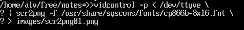
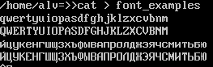
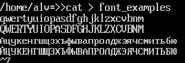
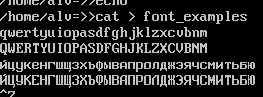

Консольные слепки и немного о шрифтах
Автор: Алексей Федорчук,
[email protected]Опубликовано:
02.02.2002
Оригинал: http://www.softerra.ru/freeos/15649/
Всем хороша текстовая консоль Unix-подобных
систем: и быстра, и эффективна, и пригожа. Одна беда – мне никак не удавалось
проиллюстрировать именно ее пригожесть. То есть – сделать скриншот текстовой
консоли. Более того, я даже теоретически не представлял, как это сделать. И
возможно ли это сделать вообще…
Поиски по файловым архивам привели меня к одной
Linux-программе, которая такое обещала. Называлась она fbshot, и комплектовалась
еще одной утилиткой – fbshit. Впрочем, назначение ее было просто – вывод
сообщения, что с помощью fbshot можно быстро превратить диск в кучу… вот того
самого, shit'а.
Хотя – вряд ли, сам по себе fbshot функции
загромождения диска выполнять не желал категорически. Во-первых, работал он
через линейный кадровый буфер (frame buffer), что не совсем идентично именно
текстовой консоли. Во-вторых, чтобы он заработал, требовалась весьма трудоемкая
(и неоднозначная) настройка, вплоть до пересборки ядра (далеко не всегда
кончавшаяся удачно). И в третьих, то, что он выдавал на выходе – ну никак на
скриншот не походило. И, отчаявшись, я эту затею оставил.
Решение пришло неожиданно – во FreeBSD. Где в
штатной коллекции пакетов (как, впрочем, и портов) обнаружилась утилитка под
названием scr2png [1]. Именно для
создания консольных скриншотов и приспособленная. Принцип ее действия
основывалась на двух особенностях FreeBSD-консоли (вернее, syscons – драйвера ее
системной консоли): возможности подгрузки шрифтов и создания дампа экранного
буфера. И за ту, и за другую отвечает vidcontrol – программа управления выводом
на экран в syscons. Соответственно, scr2png способна функционировать только в
связке с последней. Но зато – вполне справно.
Сам по себе дамп экрана текущей консоли
создается командой
vidcontrol -p
в бинарном формате, или
vidcontrol -P
– в текстовом, с игнорированием непечатных
символов и текстовых атрибутов. В обоих случаях вывод команды может быть
перенаправлен в файл, однако само по себе радости это доставит мало – нужно
обладать изрядной фантазией, чтобы принять такой dump за изображение консоли.
Программа же scr2png просто-напросто
конвертирует такой экранный дамп в графический файл – как не трудно догадаться
из ее названия, формата именно PNG, а не какого-либо другого. Но не просто, а с
учетом экранного шрифта. Который в принципе не обязан совпадать с загруженным в
настоящий момент. Отсюда синтаксис команды –
scr2png -f имя_шрифта
где в качестве аргумента можно взять любой шрифт
из каталога /usr/share/syscons/fonts/. Разумеется, если есть желание
воспроизвести русский текст, шрифт этот должен содержать символы кириллицы в
должной кодировке. А для воспроизведения именно копии экрана консольный шрифт и
шрифт для scr2png должны совпадать – правда, в этом случае аргумент можно не
указывать вообще. Хотя, с другой стороны, это – один из способов проверить, как
будет выглядеть экран при другом консольном шрифте, не загружая последний на
самом деле.
Продолжим, однако, об изготовлении скриншотов. И
указанная выше команда не приведет ни к какому результату (даже к возврату
приглашения командной строки). Все указанное хозяйство нужно объединить в
командную конструкцию с соответствующим перенаправлением ввода и вывода. Сделать
это можно двояким способом. Во-первых, через промежуточный scr-файл:
vidcontrol -p > shot.scr;
scr2png < shot.scr > shot.png
Во-вторых, конвейеризацией команд:
vidcontrol -p | scr2png > shot.png
В обоих случаях в итоге будет образован
графический слепок экрана текущей консоли (файл shot.png). Однако такой слепок
может быть получен и для любой другой доступной консоли, для чего она должна
быть указана в качестве устройства ввода команды vidcontrol:
vidcontrol -p < /dev/ttyv0 > shot.scr;
scr2png < shot.scr > shot.png
или
vidcontrol -p < /dev/ttyv0 | scr2png > shot.png
Наконец, если есть желание посмотреть на вид
консоли при каком-либо другом шрифте, его следует задать явно (рис. 1).

Рис. 1. Полная форма использования scr2png
Освоившись с программой, я, наконец, смог
осуществить давешнюю свою мечту – понаделать скриншотов с консольными шрифтами,
в первую очередь теми, конечно, которые содержат символы кириллицы. К великому
моему прискорбию, правда, таких – очень и очень немного – всего три: cp866,
cp866b и cp866c (рис. 2, a,b и c, соответственно) и их аналоги для кодировки
KOI8. Это – для матрицы 8x16; матрица 8x8 для высокой плотности отображения
символов вообще представлена только одним шрифтом.



Рис. 2. Кириллические шрифты для консоли FreeBSD
Первые два шрифта представляют собой различные,
если так можно выразиться, гарнитуры – sans serife, сходную со шрифтами
семейства fixed (cp866) и курьерообразную с засечками (cp866b); третий же
(cp866c) - весьма причудливая смесь того и другого, да еще и с иным набором
символов (кое-какая псевдографика в нем заменена экзотикой). При этом
устанавливаемый по умолчанию шрифт (cp866b) видится мне наиболее неудачным. Мало
того, что шрифты с засечками – ИМХО, вообще не лучший выбор для экрана, для
растровых шрифтов эти гарнитуры просто медицински противопоказаны. Так шрифт
cp866b-8x16 отличается и еще одной особенностью: отчетливым различием размера
символов латинской и кириллической составляющей. Что, конечно, полезно, если не
вполне уверенно отличаешь русские буквы от английских, но зрительно производит
странное впечатление.
Поневоле тут затоскуешь по Linux-консоли,
которая, кроме того же стандартного набора, располагает и строго-элегантными
беззасечечными sans и lenta, и стилизованной под древнеримских греков antiq'ой,
и Times-подобными гарнитурами. Причем – для любых кодировок, от cp866 до
Unicode. По крайней мере в отечественных дистрибутивах (Altlinux и ASPLinux)
подобрать экранный шрифт для консоли, радующий сердце и не напрягающий глаз,
труда не составит.
К сожалению, использовать Linux'овые шрифты в
консоли FreeBSD напрямую не удается – формат шрифтовых файлов разный. Хотя не
вижу причин, по которым нельзя было бы конвертировать один в другой. Правда, как
– пока не придумал. Буду признателен за любую информацию по этому вопросу, с чем
и откланиваюсь…
Вниманию вебмастеров: использование данной статьи возможно
только в соответствии
с правилами использования
материалов сайта «Софтерра»
(http://www.softerra.ru/site/rules/)